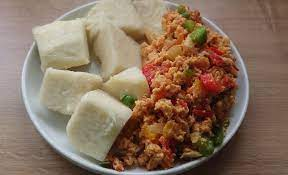

Yam recipe

How to prepare
This is a very simple meal to prepare and doesn't take lots of ingredients
Ingredients
Steps
- peel and cut yam
- add 4 cups of water to pot and boil
- add yam slices
- add small amounts of salt
- leave to cook till yam is fairly soft
- Yam is ready to serve with any sauce of choice